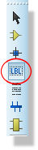
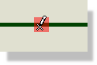
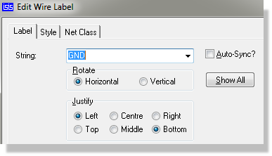
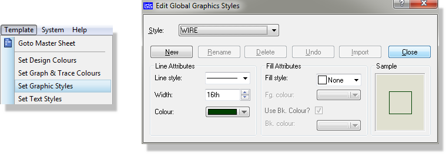
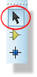
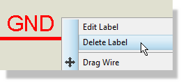
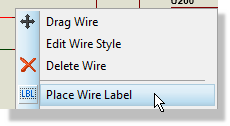
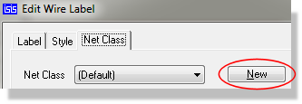
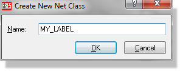

Wire labels are used to assign particular net names to groups of wires and pins, and also to assign net properties to specific nets. They are not in fact proper objects in the general scheme of the software. Instead, their behaviour is similar to other labels such as the reference and value labels of a component. It follows that the procedures for their placement and removal are somewhat different from those for other objects.
See Also:
To place or edit a wire label:



See Editing Local Styles for more details of the controls on the Style tab of the dialogue forms.
You cannot place a wire label on anything apart from a wire.
You can also place a wire label from the right click context menu of a wire.
You can place more than one label on a wire. If you wish them all to have the same name, and for all of them to update automatically whenever any of the names are changed, the click the Auto-Sync checkbox.
Proteus will orient the wire label according the orientation of the wire segment on which it is placed. This can be changed on the Edit Wire Label dialogue form.
To change the appearance of a wire:
To change the appearance of all wires on the schematic, use the Set Graphics Style command on the Template menu to edit the WIRE graphics style.

Configuring the style and appearance of wires on the Proteus schematic
See Also:
To delete a wire label:


The normal use of wire labels is to indicate that a particular wire, and all the pins to which it is graphically connected, belong to a given net. Then, that group of pins are deemed connected to any other groups of pins which have also been assigned the same net name, even where there is no graphical connection. Occasionally, one may also label particular nets purely for human benefit.
Net name AGND
See Also:
Wire labels are most often used to specify the net class for PCB Layout. The net class is essentially a grouping of nets which have the same characteristics - for example, POWER, or SIGNAL. Creating your own net classes allows you to set up trace and via styles for routing the board and also to define more granular board constraints (design rules) in the layout module.
To specify a wire as belonging to a net class
1) Right click on the wire and select Place Wire Label from the resulting context menu.


3) Enter a name for the net class and then define the routing styles, via type and ratsnest display on the dialogue form.

4) Click the OK button to commit placement.
Having set up net classes in the schematic module you can define design rules and clearance with respect of net classes from the Design Rule Manager on the Technology Menu in the Proteus Layout module.
See Also:
A wire or wire label (they are equivalent for this purpose) has the following property:
| Property Name | Description |
| NET |
The wire label text |
Wire labels can also be assigned via the Property Assignment Tool but only when it is used in On Click mode. This is because there is no way for Proteus to determine where a wire label should be placed on a tagged wire, unless you mark the position with the mouse.